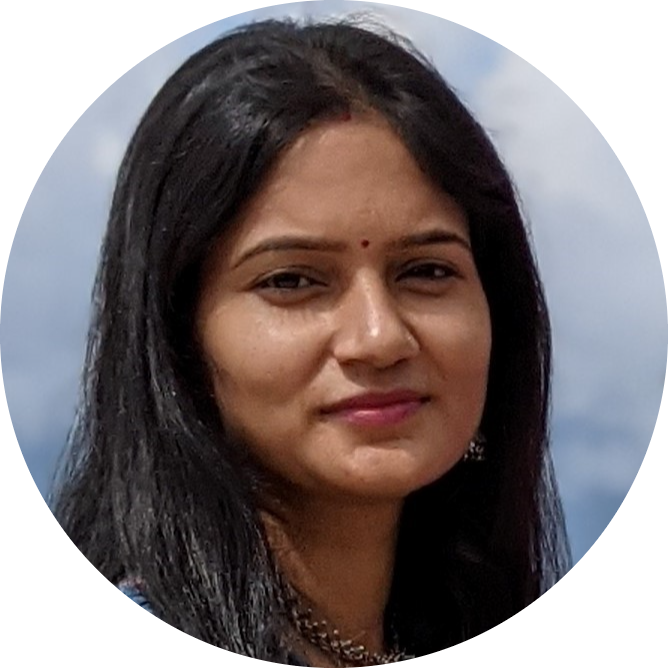
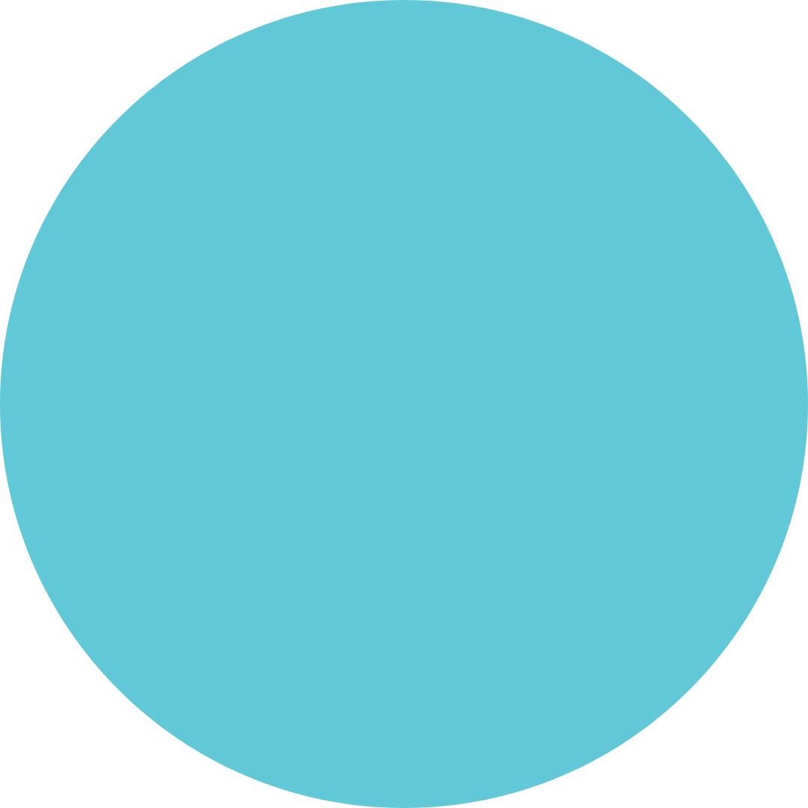

Research Highlights
Some recent exciting news from our research group!!
Our paper "On Translation and Reconstruction Guarantees of the Cycle-Consistent Generative Adversarial Networks" has just been accepted accepted to the NeurIPS 2022.
Our paper "GridShift: A Faster Mode-seeking Algorithm for Image Segmentation and Object Tracking" has just been accepted to the IEEE CVPR 2022 conference.
Both of our papers submitted to the NeurIPS 2021 (Thirty-fifth Conference on Neural Information Processing Systems) conference got acceptance for Spotight presentation!!
Congratuations to Swagatam Das, Anish, Saptarshi, and Debolina.
Our Research
Our contributions as part of the Machine Learning Research Group (MLRG) can be broadly categorized into theoretical analysis and applications of Machine Learning. Our research articles regularly find their rightful places in top-tier venues such as AAAI, IEEE TPAMI, IEEE TNNLS, ICCV, NeurIPS, CVPR, AISTATS, etc. The impact of our publications is further evident by the 2000+ times they are cited over recent years.
Primary Research Interests
Building Theoretical Backbone of Machine Learning Algorithms:
Following the fabled quote “There is nothing more practical than a good theory” by Lewin, we at MLRG are dedicated to investing our statistical knowledge in building the theoretical foundations of classical and emerging machine learning algorithms.
-
Theoretical Analysis of Clustering Algorithms:
“Clustering” algorithms attempt to find natural groups present among individuals. Even though numerous algorithms have been conceived since the days of Lloyd (1957), a significant void still marks the absence of corresponding theoretical analysis. MLRG is one of the first to employ the recent advances in learning theory to derive exact finite sample concentration results in full generality. Moreover, MLRG is invested in making clustering algorithms more efficient, fast, and interpretable. First recognized by Tukey in the early ’60s, “outliers” have consistently inspired the genesis of ‘robust’ models. Our recent paper (selected as a Spotlight submission at NeurIPS 2021) proposes a cohesive robust framework for center-based clustering under a general class of dissimilarity measures.
-
Deep Generative Algorithms:
In only 8 years, Deep Generative models found wide applicability and popularity in industry and academia for their commendable performance in applications like mage enhancing and processing, data augmentation, image-to-text or text-to-image translation, image-to-image visual style transfer, etc. Our Statisticians at MLRG accept their responsibility to provide theoretical foundations for deep generative models such as Generative Adversarial Networks and Wasserstein Autoencoder (WA). We are proud to point out that our regression guarantee of WAs got selected as a Spotlight submission at NeurIPS 2021.
-
Deep Learning
Apart from our goal of investigating the effect of class imbalance on deep learning systems (ranging
from classifiers to image segmenting models, and object detectors), we are also interested in deep genrative models
and adversarial attacks on deep classifiers.
-
Theoretical Machine Learning
Our research in this domain is focused on proving the convergence of clustering and classification algorithms,
investigating the applicability of probability divergence measures in machine learning algorithms, etc.
-
Evolutionary Optimization
In an another direction of research our group attempts to design new variants of Evolutionary optimization
techniques which are likely to be effective in diverse natured problems such as high detrimental, noisy, large scale
etc. We are also interested in theoretical analysis of such optimizers and explore their applicability in various
machine learning problems for example, improving the performance of a classifier, adversarial attacks on deep
classifiers, etc.
Our Publications
Please visit the Google Scholar page of our faculty member Swagatam Das for a detailed list of our publications. Here we are only presenting our latest works done over the past year.
You can also find implementations in MatLab or Python for many of these works in the GitHub profiles of mlrgisi, Sankha Subhra Mullick, and Shounak Datta.
-
Abhishek Kumar, Ajani S. Oladayo, Swagatam Das, Rammohan Mallipeddi, GridShift: A Faster Mode-seeking Algorithm for Image Segmentation and Object Tracking, IEEE/CVF Computer Vision and Pattern Recognition Conference (CVPR) 2022, Accepted for Oral Presentation, June 19 - 24, 2022, New Orleans, USA.
-
Anish Chakrabarty and Swagatam Das, Statistical Regeneration Guarantees of the Wasserstein Autoencoder with Latent Space Consistency, NeurIPS 2021 (Thirty-fifth Conference on Neural Information Processing Systems), Spotlight Acceptance.
-
Debolina Paul, Saptarshi Chakraborty, Swagatam Das, Jason Xu, Uniform Concentration Bounds toward a Unified Framework for Robust Clustering, NeurIPS 2021 (Thirty-fifth Conference on Neural Information Processing Systems), Spotlight Acceptance.
-
Saptarshi Chakraborty, Debolina Paul and Swagatam Das, Automated clustering of highdimensional data with a feature weighted mean shift algorithm, AAAI 2021 (35th AAAI Conference on Artificial Intelligence), pp. 6930-6938, February 2 - 9, 2021.
-
Saptarshi Chakraborty, Debolina Paul and Swagatam Das, t-Entropy: a new measure of uncertainty with some applications, IEEE International Symposium on Information Theory (ISIT 2021), 12-20 July 2021, Melbourne, Victoria, Australia.
-
Saptarshi Chakraborty, Debolina Paul, Swagatam Das, and Jason Xu, "Entropy regularized power k-means clustering",
AISTATS 2020 (The 23rd International Conference on Artificial Intelligence and Statistics), Accepted 2020.
-
Sankha Subhra Mullick, Shounak Datta, Swagatam Das. Generative Adversarial Minority Oversampling,International Conference on Computer Vision (ICCV 2019), 2019. (arxiv link: 1903.09730).
-
Debolina Paul, Saptarshi Chakraborty, Swagatam Das, and Ivan Zelinka. On the non-convergence of differential evolution: some generalized adversarialconditions and a remedy. In Proceedings of the Genetic and Evolutionary Computation Conference Companion (GECCO '19), 2019, DOI:10.1145/3319619.3322007.
-
Sankha Subhra Mullick, Shounak Datta, Sourish Gunesh Dhekane and Swagatam Das, "Appropriateness of performance indices for imbalanced data classification: an analysis", Pattern Recognition, Elsevier, DOI: 10.1016/j.patcog.2020.107197, Accepted, 2020.
-
Arka Ghosh, Swagatam Das, Asit Kr. Das, and Liang Gao, "Reusing the past difference vectors in differential evolution - a simple but significant improvement", IEEE Transactions on Cybernetics, DOI: 10.1109/TCYB.2019.2921602, Accepted 2019.
-
Avisek Gupta, Shounak Datta and Swagatam Das, "Fuzzy clustering to identify clusters at different levels of fuzziness: an evolutionary multiobjective optimization approach", IEEE Transactions on Cybernetics, DOI:
10.1109/TCYB.2019.2907002, Accepted 2019.
-
Saptarshi Chakraborty and Swagatam Das, "On the strong consistency of feature weighted k-means clustering in a
nearmetric space", STAT, Wiley, DOI: 10.1002/sta4.227, Accepted 2019.
-
Shounak Datta, Sayak Nag and Swagatam Das, "Boosting with Lexicographic Programming: Addressing Class Imbalance without Cost Tuning", IEEE Transactions on Knowledge and Data Engineering, DOI: 10.1109/TKDE.2019.2894148,
Accepted, 2019.
Our Members
Faculty Member
Swagatam Das
Associate Professor
Electronics and Communication Sciences Unit
Indian Statistical Institute
Senior Research Fellow
Avisek Gupta
Senior Research Fellow
Electronics and Communication Sciences Unit
Indian Statistical Institute

Susmita Ghosh
Senior Research Fellow
Electronics and Communication Sciences Unit
Indian Statistical Institute
Turbasu Biswas
Senior Research Fellow
Electronics and Communication Sciences Unit
Indian Statistical Institute
Anish Chakrabarty
Senior Research Fellow
Statistics and Mathematics Unit
Indian Statistical Institute
Kushal Bose
Senior Research Fellow
Electronics and Communication Sciences Unit
Indian Statistical Institute

Faizanuddin Ansari
Senior Research Fellow
Electronics and Communication Sciences Unit
Indian Statistical Institute
Graduate Students
Alumni & Adjunct members
Shounak Datta
Senior Research Engineer, ARM Inc., Austin TX, USA
Sankha Subhra Mullick
Applied Reserach Engineer, LinkedIn, India
Abhishek Kumar
PostDoc in Department of AI at Kyungpook National University, Daegu
Arkajyoti Saha
Postdoctoral researcher, Statistics, University of Washington
Saptarshi Chakraborty
PhD Candidate, Department of Statistics, University of California, Berkeley
Debolina Paul
PhD Candidate, Department of Statistics, Standford University
Imon Banerjee
PhD Candidate, Purdue Department of Statistics.
Sayantan Kumar
PhD Candidate, Deaprtment of Computer Science & Engineering, Washington University in St. Louis.
Arka Ghosh
Assistant Professor, Bennett University, India
Developed by Sankha Subhra Mullick, over the Hydeout project, on 29th of January, 2020.